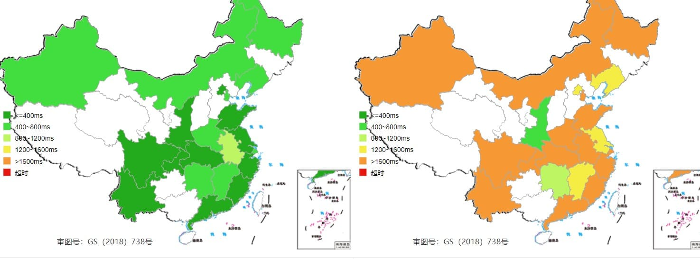
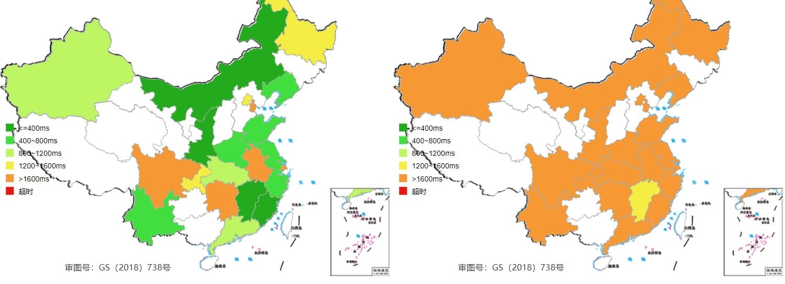

博客功能测试
本文最后更新于：2020年7月10日 凌晨
本文章用于测试博客中的各种功能。
部署优化
利用 git branch 管理 hexo 源文件
新建一个 source 分支用于存储 hexo 源文件，master 分支存储生成后的 html,css,js 文件。
已完成
利用 Vercel(原 Zeit) 托管静态页面
已完成
图床测试
直接存放在网站中,通过 Vercel 的 CDN 加速
使用路过图床

速度对比
左为部署在网站中 右为使用图床
傍晚速度(18:00)

晚上速度(21:00)

页面相关功能
代码块样式 - mac panel
TODO
数学公式 - MathJax
方程组
公式换行
矩阵
流程图
饼图
pie title NETFLIX
"Time spent looking for movie" : 90
"Time spent watching it" : 10
序列图
sequenceDiagram
Alice ->> Bob: Hello Bob, how are you?
Bob-->>John: How about you John?
Bob--x Alice: I am good thanks!
Bob-x John: I am good thanks!
Note right of John: Bob thinks a long
long time, so long
that the text does
not fit on a row. Bob-->Alice: Checking with John... Alice->John: Yes... John, how are you?
long time, so long
that the text does
not fit on a row. Bob-->Alice: Checking with John... Alice->John: Yes... John, how are you?
较大的流程图
graph TB
sq[Square shape] --> ci((Circle shape))
subgraph A
od>Odd shape]-- Two line
edge comment --> ro di{Diamond with
line break} -.-> ro(Rounded
square
shape) di==>ro2(Rounded square shape) end %% Notice that no text in shape are added here instead that is appended further down e --> od3>Really long text with linebreak
in an Odd shape] %% Comments after double percent signs e((Inner / circle
and some odd
special characters)) --> f(,.?!+-*ز) cyr[Cyrillic]-->cyr2((Circle shape Начало)); classDef green fill:#9f6,stroke:#333,stroke-width:2px; classDef orange fill:#f96,stroke:#333,stroke-width:4px; class sq,e green class di orange
edge comment --> ro di{Diamond with
line break} -.-> ro(Rounded
square
shape) di==>ro2(Rounded square shape) end %% Notice that no text in shape are added here instead that is appended further down e --> od3>Really long text with linebreak
in an Odd shape] %% Comments after double percent signs e((Inner / circle
and some odd
special characters)) --> f(,.?!+-*ز) cyr[Cyrillic]-->cyr2((Circle shape Начало)); classDef green fill:#9f6,stroke:#333,stroke-width:2px; classDef orange fill:#f96,stroke:#333,stroke-width:4px; class sq,e green class di orange
小结
流程图的样式不对，部分较大的流程图会超出页面界限，在 mermaid 的说明文档中也存在这样的问题，估计是 mermaid 的 bug，修复需要自己自定义 css，比较麻烦。考虑到 markdown 中画流程图的语法也不简单，mermaid 生成的 svg 图片无法放大，因此弃用，除简单图外，均使用插入图片形式展示流程图。
iframe 视频播放
本博客所有文章除特别声明外，均采用 CC BY-SA 4.0 协议 ，转载请注明出处！